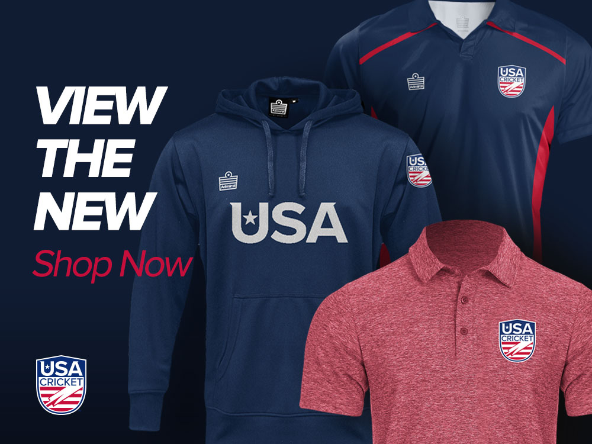

The United States cricket team definitely isn't one of the heavyweights in the world, but there has been steady increase in the quality of talent and playing over the years. The United States team played in the World Cup qualifiers this year, but didn't make it to the league stage.
The jersey colors for the cricket national team are very similiar to other national sports. Here's what they look like (hover over to zoom in):
